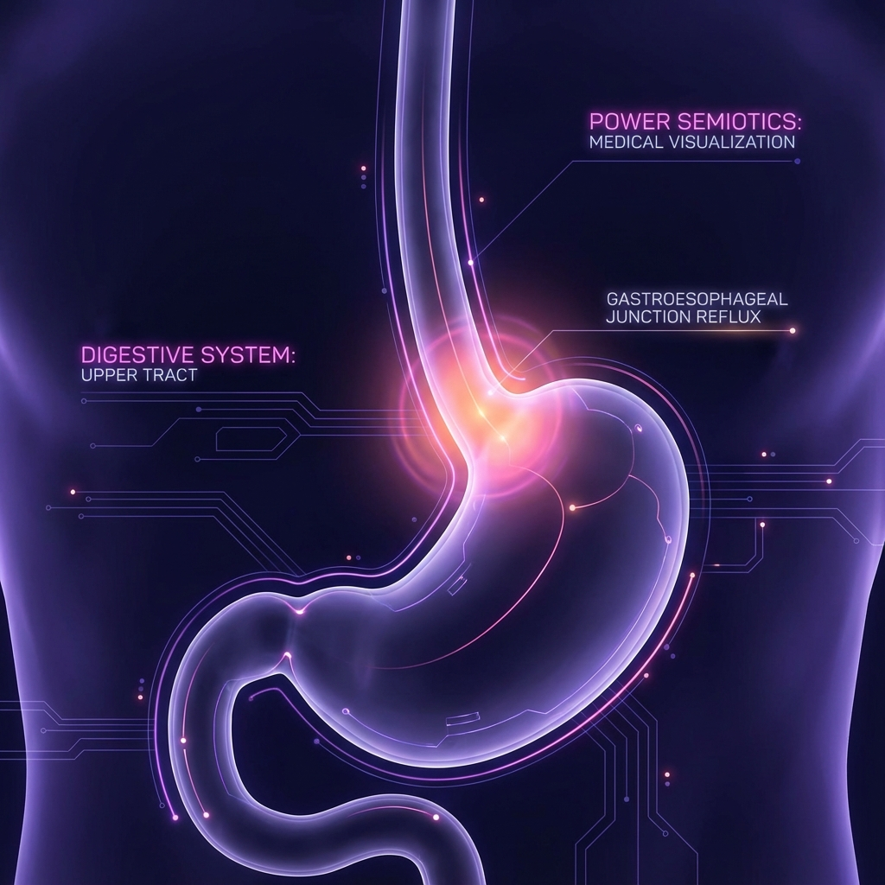

Fisiopatología de la ERGE
La Enfermedad por Reflujo ocurre cuando el contenido gástrico regresa al esófago, causando síntomas molestos o complicaciones. Es una falla sistémica de la barrera antirreflujo.
Prevalencia Global
Riesgo Esófago Barrett

"Visualización de la unión gastroesofágica y la incompetencia del EEI."
settings_suggest La Barrera Rota
-
1
RTEEI
Relajaciones Transitorias del Esfínter Esofágico Inferior. Mecanismo principal.
-
2
Hipotensión del EEI
Presión basal < 10 mmHg.
category Espectro Clínico
Reflujo No Erosivo
Síntomas presentes sin daño visible en endoscopia (70%).
Barrett y Adenocarcinoma
Metaplasia intestinal secundaria a injuria crónica.
Paciente: Carlos
Presentación Clínica
"Ardor en el pecho diario desde hace 6 meses. Empeora tras cenas copiosas y al acostarse. Tiene regurgitación ácida."
Rincón del Razonamiento
Signos de Alarma: Ausentes.
Manejo: Prueba Terapéutica con IBP
por 8 semanas.
Evaluación Final USMLE Style
Responde las 5 preguntas estandarizadas.